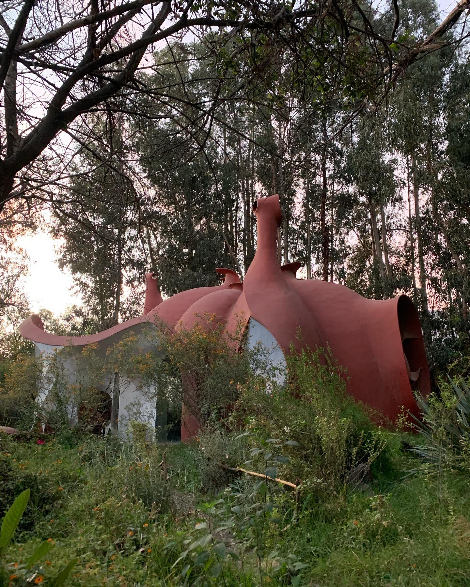

The Commune


BOLIVIA, WHERE TO BEGIN
10th July 2024
I would like to begin this post by stating a fact. Parts of this post are entirely fictional. That’s right, every here and there I will be making things up. Why you wonder- for attention obviously because I am indeed an attention whore. Now that that has been established, let's get into it. I entered Bolivia illegally, I did not intend to, it just happened. It was late in the evening when we arrived at the Bolivia-Argentina Border. Unlike the Argentinian border which was deserted except for the customs offices, there was a whole town at this border, two actually. On the Argentinian side was the town La Quiaca and on the Bolivian side was the town Villazon. As we drove through La Quiaca heading for the customs offices where we needed to stop before entering Bolivia, through the window I could see people selling things by the road, heard a lot of yelling, a lot of cars going back and forth. It was loud and bright despite it being past 10pm.
When we got to the customs offices, the driver parked the bus and asked everyone to get off and line up. He said a lot of words in Spanish among them the words pasaporte and inmigración, words which at this point I had heard often enough to know what he meant. So I pulled out my passport and got in line with the rest. After a few minutes, it was my turn and there I was face to face with this immigration officer who barely spoke any English. She seemed tired and therefore impatient and she was asking for my Visa she presumed I had obtained before getting on a bus bound for Bolivia. Now it took me a minute to understand what this person was asking of me but when I did understand the only thing I could do was let my heart slowly and steadily sink to my stomach or crawl up my throat, direction does not matter, the point is my heart was on the move. The panic I felt at that moment as all the possible outcomes of this interaction began to play out in my head was something worth noting. I mean I might have to spend the night at the border which in itself is terrifying. I have never been to this town, I don’t know what it is like out here after midnight, what if I get robbed, murdered, or worse. As these thoughts sprinted through my head the immigration officer, maybe noticing the panic on my face, assured me it was not a big deal if I didn’t have a visa, all I needed to do was apply for one and applying for a visa here at the border was an option. The relief that set in, I was breathing through my nose again, my heart made its way back to my left side, and everything felt alright. But just as I was getting used to feeling relief, she added that unfortunately, all the officers who could help with the visa application process had already gone home for the day, so I would definitely have to spend the night at the border and apply for a visa the next day. The officer seemed to have no more to say on the matter, so she asked me to step aside as she called up the next person. So I did because what else was I supposed to say, what could I say.
I walked outside, pulled out my phone, and started doing the only thing that seemed to make sense at the moment, which was looking for a place to stay for the night. I went on Airbnb, booking.com, and even Hostel World, but couldn’t find anything that late. Before I thought I was panicking, but now that I actually was, I realized how goddamn chill I was before. Just around then this random dude approached me. He asked me what was up and I told him what was up because why not right. Anyway, he told me he had a car and could drive me across the border if I paid him. Shady for sure, but I was desperate enough to consider it. So consider it I did. However in the end I decided against it mainly because his vibes were off, no other reason. There was a police station nearby so I went in and asked if there was anywhere I could sleep for the night, maybe in one of their empty jail cells, I don’t know. They said no, I then asked if there was a bathroom I could use and they said yeah they can unlock it for me. Unlock? Sounds like the bathroom would be a relatively safe place to sleep for the night was my first thought. When they let me into the bathroom it was clean too and I was like hell yeah, I am definitely sleeping in this bathroom tonight. But then I thought about it some more, those men know I am in here, and I have no reason to trust them, in fact, I definitely don’t trust them, a million things could happen and I have no interest in dealing with any of them. So I used the bathroom and headed back to the custom building.
I was just standing at the entrance not really sure what my plan was when another random dude approached me. He told me he knew I needed a visa to enter Bolivia and if I paid him $100 he could get me a visa in a few minutes. I knew he was full of shit, I am naive, not stupid. But I told him I was down. He left for a bit and came back with a stamp on a random piece of paper and I was like I am obviously not giving you $100 for that. This man kept talking and talking and just started following me around and it was then that I decided I was definitely not spending the night at this border. I decided I will be getting back on that bus by any means necessary. Around then the other passengers had already finished going through customs and were waiting on the other side of the border for the bus to pull around so they could get on. I realized the door of the bus was open so I just hopped on, no one was paying attention, who would stop me. The driver closed the door, started the bus, and drove across the Border and that is how I entered Bolivia without a visa. He picked up the other passengers and we drove a little further into Villazon, the town on the Bolivian side of the Argentina-Bolivia border before stopping for dinner. Guess who the fuck was there, the dude with the fake stamp asking for $100. Sounds like a nightmare? It definitely felt like one. After some back and forth, I gave him $40, not really for the stamp, but just to shut him up. I was worried if I gave him nothing, he might go tell the border patrol officers I had entered the country without a visa. He was not satisfied and requested I give him more money and I was like absolutely not. There was some more back and forth at which point this son and mother who had been sitting in the seats next to me on the bus stepped in. The son and this dude argued for a while, anyway after what felt like forever, he left. I got back on the bus with the rest of the passengers and it finally sank in that I was in Bolivia. We were still a long way from our destination Cochabamba which was about 24 hours from Villazon, so once the bus started moving again and everything felt calm enough, I went right to sleep.
When I woke up a couple of hours later, we were driving through Santa Cruz de la Sierra, one of the big cities in Bolivia. It was my first real sight of Bolivia. The first things I noticed were the unusually small houses and the busy streets. As I watched the city go by through the window of the bus I drifted back to sleep.
From Santa Cruz to Cochabamba was about 9 hours so we still had a long way to go. I woke up several times within those 9 hours, I listened to music, I read, and I think we stopped for breakfast at some point. By the time we got to Cochabamba, it was nightfall, might have been sometime past 8pm. When I hopped off the bus I knew I had to get my backpack, which I did, and said goodbye to the son and mother. But beyond that, I had no idea what direction to head. I tried using Google but because it is Bolivia and a lot of the public transportation routes are unofficial and therefore not visible on Google Maps, I could not rely on my phone entirely to get me where I needed to go. I was not sure where exactly in Cochabamba I was, how far I was from the place I had made plans to stay for the next couple of weeks, or what bus to take to get there. Did I eventually figure it out? Of Course I did. First I had to get some US dollars converted into Boliviano which I was able to do at the bus terminal. Then I approached a stranger and using my very limited Spanish, I was able to get directions on how to get where I was going. With directions and money, I felt ready to figure out everything else. So I stepped out into the night. I was not ready for how crowded it was outside, but I pushed through. I found the bus I was supposed to take, at least I thought I did. I got on and a few minutes later realized it was going in the wrong direction, so I had to hop off and get on the same bus number just going in the opposite direction, which I did. Now the thing about buses in Bolivia is that they do not have a cord you can just pull to request a stop, no you have to use your vocal cords. When you want the bus driver to stop, you have to yell “dejame aqui” loud enough for the bus driver to hear over all the talking and noise. Either that or you miss your stop. I don’t love yelling but I did it and honestly, that was the most challenging part of riding public transit in Bolivia.
By the time I knocked on the door to the Janajpacha commune, it was past 10pm. The lady on workaway who I had been communicating with opened the door. She was very soft spoken was the first thing I noticed about her. She led me to my room, showed me the bathroom, and then told me she would go bring me dinner while I did whatever I needed to do. So I unpacked and took a shower. While I was in the shower the lady had come by and left me dinner which was this huge bowl of peanut soup. I ate some of it and then went to bed.
My stuff in my room
I woke up the next day around 7:00 am and headed to the main building. When I got there, there was a girl there waiting, from our brief introduction, I learned that she had been in the commune for a few weeks so far. Besides me, she was the only other volunteer in the place at the time. We were shortly joined by the two other women currently living in the commune. I don’t remember much of what was said during this initial interaction, but I do remember them telling the other volunteer and me what work they wanted us to do for the day. Because of Covid, the Commune had been closed to visitors for a while so everything was covered in dust, so that day, they had us hose and wipe down the chairs in this outdoor pavilion and then we spent some time weeding around it. Around 11:30 a bell rang and the other girl told me the bell meant it was time for lunch. I don’t remember what we had for lunch but I do know it was vegan and healthy as can be. After lunch, there was free time until 4pm, time which I spent wandering around the commune.
The property on which the commune was on was huge, there were about five buildings all of different styles serving different purposes. There was a pool, a very unique stage, and just a lot of open spaces. There was also an outdoor shower which I came to love using.
At 4pm, I met up with the other volunteer and we spent two hours watering the many plants that existed in the many open spaces. Between dinner and watering plants we had about an hour to ourselves, I don’t recall what I did in that hour, but at 7pm I headed over to the main building for dinner. We sat around a fire, ate dinner and for the first time really talked. I learned the woman who had opened the door for me the previous night was from Bolivia and the other woman was from America. She visited the commune about 8 years ago and just never left. I learned the other volunteer was from Italy but had spent at least the last 3 years or so in Brazil, I will later learn that she had a girlfriend back in Brazil whom she loved dearly and was eager to get back to. She apparently only left Brazil because she had to, her visa had expired and she needed to get out of Brazil to be able to reapply so she decided to come to Bolivia. After dinner, we did our dishes and went to bed. The next day the routine started all over again. I was at the commune for about 1 week, maybe more, and every day was the same. The only thing that changed were the chores we did between 7am and noon. We painted tree markers, did laundry (by hand), scrubbed the bottom and walls of the pool, cleaned the dining room, and did a lot of weeding.
Sometimes the commune did feel a little culty. At some point during my stay I learned that the owner of the commune was this rich Bolivian dude named Chamalu, his real name is actually Luis Espinoza. But he came up with a whole doctrine about how to live, a doctrine around which life in the commune is centered. The whole doctrine is very peace and love, very hippy- not trying to be a judgment here, just being descriptive. The way they talked about him, it was like they worshiped him. There was this woman from Venezuela who arrived much later. She apparently came all the way to Bolivia to learn about Chamalu's doctrine. I don’t know, it was not for me but I get why someone could come to a place like that and stay. What’s not appealing about a charismatic leader who claims to know all the answers and wants to guide you through life? Also, someone spit on me while I was in Bolivia. It was in a market and I was walking down this road and I just felt something on my arm, I touched it and realized it was spit. Immediately went looking for a bathroom, I found one and was able to wash my arm with soap. I would have liked to cut it off entirely but that would have been too messy. Earlier that day, I decided to come into town to experience Cochabamba as well as do some grocery shopping and that's how I found myself on that road. When it happened I had pretty much already gotten everything I needed so I headed back to the commune. Don’t ask me why anyone would spit on me, I am not sure why either.
Anyway after about a week or so in the Commune, the girl from Italy told me she was heading to La Paz, which is a capital of sorts of Bolivia, if not the capital. When she told me she was going there I asked her if I could come with her and she said yes. I hadn’t planned on going to La Paz but thought it made sense to go to La Paz once I found out there was a US embassy there. I had hoped that they might be able to help me sort out the visa situation. We picked a day, said our goodbyes, and headed out, We took an overnight bus from Cochabamba to la Paz. I think the bus ride to La Paz was the first time I really experienced altitude sickness. La Paz is at a rather high altitude, 11942' to be exact, and I remember waking up at some point during the night with the worst feeling of nausea I had ever experienced. I had to lean forward for most of the ride to keep from throwing up. God was I glad when we finally arrived in La Paz and finally stopped moving.
When we got off the Bus it was barely dawn. The streets were quiet and practically empty. We headed to our hostel which was only about 15 minutes from the bus terminal, the rooftop hostel, was what it was called. They told us we could not check in until some time in the afternoon, but they did allow us to drop off our bags which was nice. We left the hostel and went exploring. It was a lovely morning and it was lovely experiencing the city before it became busy and loud. We walked past people hurrying to their jobs, or eating breakfast at local restaurants, we saw kids hurrying to school and shop owners opening their stores. At that moment life felt like a movie as it sometimes does when you are a tourist. We were not really part of anything, merely observers watching life being lived by characters who we will never really know. We got some breakfast and after I told the girl from Italy about the whole visa situation, we went looking for the US embassy Google claimed was in La Paz. After much wandering we found it, but they were not much help, they said the only people who could do anything to rectify the situation were the Bolivian officials. I considered going to the Bolivian immigration offices in La paz but decided against it mainly because I was not sure how they would handle the whole situation and the uncertainty was terrifying, so I threw my hands up in the air and thought to myself well I tried. We did some more touristy things, like riding the cable car and visiting the local open market before heading back to the hostel.
At the hostel we checked in, took showers, and then took a lengthy nap, I don’t even remember the rest of that evening. We might have just slept through the evening. After a few more days of sightseeing, the girl from Italy told me she would be heading down to the Bolivian Amazon and from there will be crossing over to Brazil. I, on the other hand, had just read about Lake Titicaca and was very much looking forward to visiting it before I left. So it was there we said our goodbyes. The morning she left for the Bolivian Amazon, I took a bus to Lake Titicaca. Sure it is the largest freshwater lake in South America and the highest of the world's large lakes existing at 12507', but those were not the reasons I decided to visit. I decided to visit because somewhere somehow, I had learned that according to the Incans, the civilization that existed in those parts before the Bolivians, Lake Titicaca is where the cosmos was created. It is said that the sun god Inti and the moon goddess Mama Killa as well as the first Incan Manco Capac all emerged from the depths of that lake. So yes I had to go see this lake.
The drive to get to the lake was interesting. We drove to this port and then had to get off and catch a ferry while the bus was transported across the lake on some platform. On the other side, we got back on the bus and then drove the rest of the way to Copacabana, one of the many cities around Lake Titicaca. I hung out by the water for a bit. I would have loved to get in the water but I did not bring a bathing suit. After hanging by the lake for a while, I decided to go wandering around Copacabana, it was when I was wandering around Copacabana that I started to feel terrible. I thought I was going to pass out. It was a similar feeling to what I felt on the drive up to La Paz, so I knew it was altitude sickness. The fact that I had barely eaten or drank anything all day did not help matters, so the next restaurant I walked by I went into. The person who worked there was really kind. I can’t tell if he could tell I was struggling but he offered me water before I even sat down. I ordered a rice-based meal and after eating I did feel better. At that point I decided it was time to head down, so I got on the next bus headed back to la Paz.
I had planned on being In La Paz for about five more days, but there was also not really much else I wanted to do there, so I decided to head out a day after my visit to Lake Titicaca. Besides with the girl from Italy gone the city just did not feel the same. Many things were different, but mainly it felt terribly lonely. I sometimes wonder why it felt that way, I mean I have been in cities by myself before and did not feel lonely. My theory is that experiencing the city with her made me experience the city without her feel lonely. Every street I walked down, or everywhere I went or just anything I did I kept expecting her to be there because her being there was a feeling I had gotten used to. So when I looked around and remembered she was not there, I found myself wishing she was, a longing that left me feeling lonely. It felt like there was a gap left behind by her that no amount of fascination with the place or love for it could fill. I had to leave. So I left La Paz and headed for Paraguay.